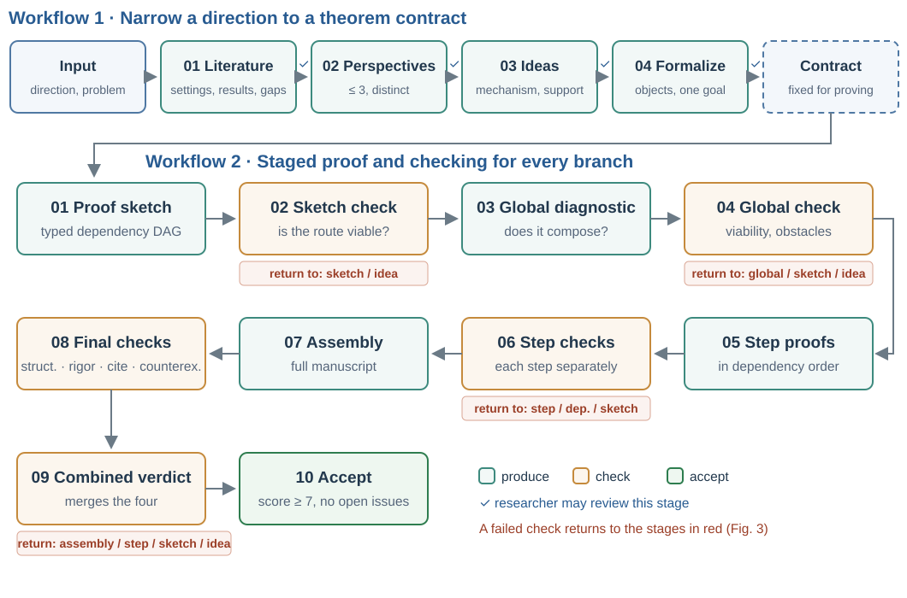
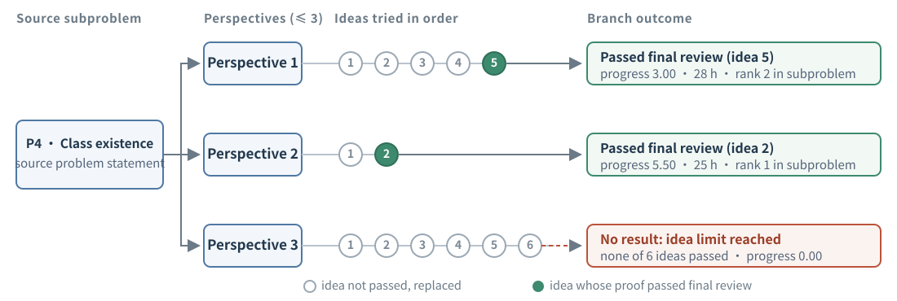
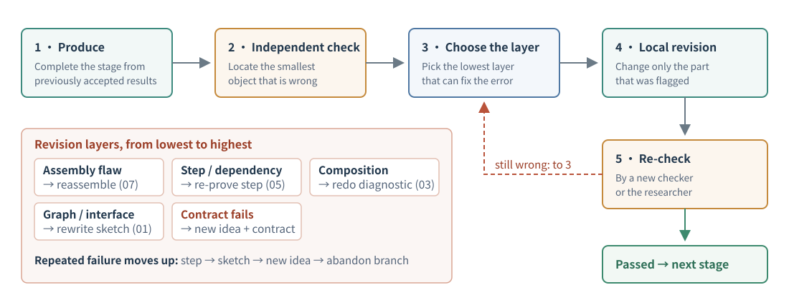

1. Background
1.1 Research Question and Motivation
Machine learning theory resembles mathematics: we describe algorithms, models or learning tasks mathematically and prove guarantees about them. But an ML theory problem is more than a proof. It usually has three parts: a setting (data model, information available to the algorithm, loss and metric, parameter regime), a target (an upper or lower bound, and whether it is tight), and a proof mechanism (analysis tools and a chain of lemmas). In short:
Under [assumptions], for [model] on [task], what is the [guarantee] (upper or lower bound), and is it tight?
For an open problem, none of the three parts is settled. Researchers typically proceed as "survey the literature → choose a route → propose an idea → state a theorem → prove it" [13, 20], and face three main difficulties:
- Slow, serial progress. A problem often takes weeks to months, and few directions can be pursued at once.
- Problem drift. When the original question is too hard, researchers relax the setting, for example by restricting the algorithm class or adding a condition; the result may then no longer answer the original question [18].
- Proofs that are hard to check. Steps are compressed and assumptions are scattered across the paper and appendix, so errors in local derivations, in the connections between lemmas and in the target itself become entangled.
As language models improve at mathematics, these steps may be carried out by an agent [11, 14]. But asking a model to write a proof for an open problem directly makes the last two difficulties sharper: the model can quickly produce a long proof without stating which conditions it changed, and when the proof fails it is hard to tell whether to fix one derivation, the whole route, or the problem itself. Our question is therefore:
When the research goal, the mathematical setting and the proof route must evolve together, how can an agent make progress while keeping every result precisely tied to the source question?
VALG (Zhang et al., 2026) is designed around four principles, each addressing one of these difficulties:
- Parallel exploration (difficulty 1): a problem is approached from up to three distinct angles at once.
- Fix the setting first (difficulty 2): before proving, the claim is written as a precise theorem statement that may not change during the proof.
- Layered checking (difficulty 3): whether the route reaches the target and whether each step holds are checked separately.
- Explicit relaxation (difficulty 2): failures are traced to a specific layer, and relaxing the setting requires a new theorem statement that records the added conditions.
The name summarizes these components: layered Verification, Adaptive formulation of the problem, Learning-theory problems, and Graph-structured proof development.
Section 2 presents the method: the core concepts, Workflow 1 for forming the theorem statement, Workflow 2 for staged proving, the final review, and revision after failure. Section 3 reports results on COLT 2026 open problems and uses three examples to show what each result covers and what remains open. Section 4 summarizes the findings and limitations.
VALG first writes the research problem as a precise theorem statement that cannot change during proving, then proves and checks it in layers; when a proof fails, the problem can only be relaxed by adding conditions and recording the gap.


1.2 A Running Example
We use the tensor decomposition open problem from COLT 2026 (P1, Arvanitakis et al., 2026) as a running example to make each step of VALG concrete.
The target tensor T is a sum of r rank-one tensors whose factors are deterministic vectors plus small Gaussian perturbations (a smoothed tensor model). An algorithm fits it by least squares with k components; k > r means overparameterization. Iterative algorithms such as alternating least squares (ALS) or gradient descent (GD) start from a random initialization. The source question asks how large k must be for these algorithms to converge to the global optimum with high probability. It has two subproblems:
Upper bound: does some iterative method with r < k = o(r2) return, in polynomial time and with high probability, a decomposition with error at most ε‖T‖F?
Lower bound: is there a universal c > 0 such that for r < k ≤ r1+c, ALS, GD or another iterative method converges with constant probability to a strictly positive loss, i.e. fails to fit when overparameterization is insufficient?
- Setting: smoothed tensor model, Gaussian initialization, a general class of iterative algorithms, and the ranges of k, r and dimension n.
- Target: the overparameterization needed to reach the global optimum. We focus on the lower-bound subproblem.
- Proof mechanism: the whole iterate trajectory must be controlled. General updates can leave the subspace spanned at initialization, which is the main difficulty.
- Later use: Section 2.2 gives its theorem contract, Section 2.3 its proof dependency graph, Section 2.5 the layer of its main obstacle, and Section 3.3 the result and remaining gap.
2. Method
This section defines the core concepts (2.1), then describes how Workflow 1 turns a research direction into a theorem contract (2.2), how Workflow 2 proves it in stages (2.3), the final review (2.4), and layered revision after failure (2.5).
VALG separates research judgment from proof checking: the former decides which problem to study and may involve the researcher; the latter decides whether a claim holds in a fixed setting and is carried out by checking models independent of the prover. The proof is first written as a dependency graph [12]; only after the route passes a check is it expanded step by step, with each step checked separately.
2.1 Core Concepts
An open problem can be approached from different angles. For tensor ALS, one may start from the algorithm class, the initialization or the parameter regime. VALG organizes this exploration in two levels: research angles above, and concrete mathematical proposals under each angle below.
- Perspective
- A research angle, characterized by the target, model class, data assumptions, parameter regime and algorithm. Each problem is explored through at most three perspectives in parallel.
- Idea
- A concrete proposal within a perspective, giving the expected mathematical mechanism and target claim. An idea may make its perspective more specific, never broader.
- Theorem contract
- The precise mathematical problem obtained by formalizing an idea: objects, assumptions, parameter regime, quantifiers and exactly one goal. It may not change during the proof.
- Branch
- A perspective together with the ideas tried under it in turn. Each branch yields at most one candidate theorem.

2.2 Workflow 1: From a Research Direction to a Theorem Contract
Workflow 1 takes a research direction and a problem statement extracted from the source paper (the research brief), which lists the settings and known results to preserve. It has four stages:
- Literature survey. Collect related settings, known results, existing proof methods and open questions, and confirm that the gap identified belongs to the original research direction.
- Perspective selection. Propose at most three perspectives, each grounded in a concrete gap in the literature. The perspectives must differ, so that exploration does not concentrate on a single interpretation.
- Idea generation. Propose concrete ideas under each perspective, stating the expected mathematical mechanism and its support in the literature or in a derivation. Unsupported ideas, and ideas that duplicate another branch, are discarded.
- Formalization. Write a viable idea as a theorem contract.
The first three stages require research judgment: whether a gap matters, whether a perspective is worth pursuing, whether an idea is meaningful. The researcher can therefore review the output of each stage and approve it, edit it or ask for a new one (✓ in Figure 1); alternatively the system proceeds on its own with the same source scope and branch constraints. Only ideas written as theorem contracts enter the proof stage.
For the P1 lower bound, the branch of perspective 1 does not treat general ALS but studies constrained ALS and gradient descent (cALS, cGD), in which the first factor matrix stays in the subspace spanned at initialization. Its theorem contract specifies:
- Dimension: n ≥ 8r5/4.
- Overparameterization: r < k ≤ r5/4, i.e. c = 1/4 in the source question.
- Model: arbitrary base vectors, with the claim uniform over them; Gaussian smoothing; both algorithms share one target tensor and have independent initializations.
- Algorithms: the given minimum-norm ALS updates and Armijo-step gradient updates.
- Goal: with probability at least 1/4, both algorithms have a strictly positive limiting loss.
- Difference from the source: the algorithm class is narrowed and a dimension condition is added.
Once the contract is fixed, the prover cannot alter it to complete a proof, for instance by shrinking k ≤ r5/4 to k ≤ r1.1 or strengthening the dimension condition to n ≥ r2. If such a change is genuinely needed, the work returns to Workflow 1, where a new idea and a new contract are formed in the same branch and their difference from the source is recorded (Section 2.5).
2.3 Workflow 2: Check the Route First, Then Prove Step by Step
VALG originally generated complete proofs in one pass. Such proofs mix overall structure, local derivations and final presentation, and are too compact to check: when something is wrong, one cannot tell whether a step is miscalculated, a lemma fails to imply the next claim, or the target itself was poorly chosen. Workflow 2 therefore divides proving into 10 stages (Figure 1):
| Stage | Content | If not passed, return to |
|---|---|---|
| 01 Proof sketch | Write the dependency graph: assumptions as sources, lemmas as intermediate nodes, the target theorem as the sink | — |
| 02 Sketch check | Does the route cover the target, and are the dependencies sound | sketch / idea |
| 03 Global diagnostic | Without writing the full proof, analyze whether the hard nodes compose into a complete argument | — |
| 04 Global check | Judge whether the whole theorem is viable and identify obstacles | global / sketch / idea |
| 05 Step proofs | Prove the nodes S1, …, Sm in dependency order | — |
| 06 Step checks | Check each node independently | step / dependency / sketch |
| 07 Proof assembly | Connect the checked steps into a complete LaTeX proof | — |
| 08 Final checks | Check structure, rigor, citations and counterexamples separately (Section 2.4) | — |
| 09 Combined verdict | Combine the four checks into a verdict; if negative, name the lowest layer that must be revised | assembly / step / sketch / idea |
| 10 Accept | Accept the candidate theorem if the score is at least 7 and no issues remain | — |
The sketch makes dependencies explicit. Each node states its exact claim, the assumptions it may use, the nodes it depends on, the planned method, and the form of the conclusion passed to later nodes. Stating these interfaces makes it possible to check that nodes actually connect. For example, a later node may need a high-probability bound uniform over all parameters while the earlier node only gives an expectation bound for a fixed parameter: both are relevant to the problem, but they do not connect.
The global diagnostic checks composition. A structurally complete graph does not guarantee that each node follows from its inputs, or that its conclusion has the form and strength later nodes need. A lemma may control an approximate object while the target concerns the original one; or every fixed time may be bounded without convergence of the whole trajectory. The global diagnostic examines each node: what mechanism or known result it relies on, whether parameters, probabilities and modes of convergence are consistent, and whether recursions, limits and edge cases close. These questions are settled before the full proof is written.
Step proofs prove exactly the assigned claim. A node may use only its permitted assumptions and the earlier claims that have passed their checks; any additional local lemma must be stated and proved first. The prover may neither strengthen assumptions nor weaken the required claim. After all nodes pass, assembly unifies notation, connects the arguments and confirms that the local claims together yield exactly the goal of the contract.
Following the paper's account of the proof of the cALS/cGD lower bound, its dependency graph has four intermediate nodes. Let F = ½‖T − represented tensor‖F2.
- Subspace invariance: because the first factor is constrained, the tensor represented at every step lies in the fixed subspace SM ⊗ ℝn ⊗ ℝn.
- Orthogonal residual: the dimension condition gives k/n ≤ 1/8, so with probability at least 1/4 the part of the target outside that subspace satisfies ‖(I − P)T‖F2 ≥ (3/4)‖T‖F2.
- Loss lower bound: from 1 and 2, F(t) ≥ (3/8)‖T‖F2 for all t ≥ 0.
- Convergence: the given descent rules make F(t) converge to a finite limit, which is therefore at least (3/8)‖T‖F2, the goal.
The interfaces to check include: the event in node 2 must hold for both algorithms simultaneously and uniformly over the base vectors; node 3 requires node 1 for every t, not only in the limit.
2.4 Final Review
Assembly is the first point at which all local claims must jointly establish the theorem, so the final review is carried out by four checking models, each examining one aspect:
| Aspect | What is checked |
|---|---|
| Structure | Do the target, dependency graph and final proof correspond one to one, and are all dependencies closed |
| Rigor | Are quantifiers, assumptions, derivations, probabilistic arguments and edge cases correct |
| Citation | Do cited theorems exist, and do their conditions support the way they are used |
| Counterexamples | Are there unhandled edge cases or counterexamples |
A combined review merges the four into a verdict. The candidate theorem is accepted if the score is at least 7 and no issues remain; this score differs from the progress score of Section 3.1. Otherwise the combined review names the lowest layer that must be revised: the assembly, a step, the sketch or the idea.
2.5 Layered Revision
When a proof fails, VALG requires the check to identify the smallest mathematical object at which the error occurs, and then selects the lowest layer that can correct it. The selected stage may use only previously accepted results, the failed proof and the check's comments, and it changes only the flagged part; the revision must pass a new check, by a fresh checker or by the researcher, before moving to the next stage (Figure 3).

Errors fall into four layers:
| Layer | Example | Revision |
|---|---|---|
| Assembly | Inconsistent notation, a missing connection, or an unproved derivation introduced during assembly | Reassemble (07) |
| Local derivation | An inequality in the wrong direction, or a theorem applied without its premise | Re-prove the step or its dependencies (05) |
| Proof structure | A lemma holds but its conclusion cannot support the target; a recursion does not close | Redo the global diagnostic for composition problems (03); rewrite the sketch for graph or interface problems (01) |
| Theorem contract | The goal cannot hold as planned in the current setting | Return to Workflow 1 and form a new idea and contract in the same branch, recording the difference from the source |
With this layering, a local calculation error does not disturb the whole dependency graph, and an interface error in the graph is not mistaken for a problem in one derivation. Only contract-level problems may relax the setting, and the gap must be recorded. When repeated revisions at one layer fail, the problem moves up, in the order: local step, proof sketch, new idea, and finally abandoning the branch.
The paper identifies the main obstacle for general ALS in the P1 lower bound: unconstrained updates can leave the initialization span, so the proof loses the fixed subspace that prevents exact fitting and cannot control the iterate trajectory. This obstacle lies at the contract layer and cannot be removed by revising a single derivation. The cALS/cGD contract of Section 2.2 avoids it by narrowing the algorithm class, and states this change of scope explicitly.
3. Results on COLT 2026 Open Problems
This section describes the setup and scoring (3.1), gives results per subproblem (3.2), and presents three examples showing what each result covers and what remains open (3.3).
Of 9 subproblems, 2 were fully solved and 7 partially solved; 22 of 25 branches produced a candidate theorem that passed the final review. All 4 perfect-score branches succeeded with their 1st idea, yet of the 8 branches that succeeded with their 1st idea, the other 4 reached progress of only 5.25–7.00.
3.1 Setup and Scoring
We selected 9 subproblems from 5 COLT 2026 open-problem papers: upper and lower bounds for tensor ALS (P1, Arvanitakis et al., 2026), non-adaptive 1-bit mean estimation (P2, Lau & Scarlett, 2026a), the SGD and SQ subproblems of deep versus linear learning (P3, Feldman et al., 2026), sample complexity and class existence for private PAC learning (P4, Nissim et al., 2026), and polynomial and Pfaffian boundaries in online optimization of piecewise-Lipschitz functions (P5, Balcan et al., 2026).
Each subproblem was run once, independently, from a problem statement extracted from the source paper, with GPT-5.6-sol at the highest reasoning effort for all stages. Seven subproblems were explored through three perspectives and the P1 upper bound and P5 polynomial subproblems through two, giving 25 branches. The accepted candidate theorems were checked by models from several angles and by the authors; they have not yet been reviewed by the authors of the source problems or formally verified.
Within each perspective, ideas are generated in a fixed order: first an idea faithful to the source that aims to solve it fully; only if no such idea is viable, an idea that relaxes the setting for partial progress. A new idea is proposed only when an idea-level check fails, or when repeated revisions at lower layers fail. The number of ideas a branch tried therefore reflects how often it failed at the idea level.
Each candidate theorem is scored on three separate measures, to distinguish "is the proof reliable", "how much of the source problem is solved" and "is the method new":
| Measure | Definition |
|---|---|
| Progress P ∈ [0, 10] | Rated by an independent model against the source subproblem, P = min{C + B + H, cap}. C ∈ [0, 4] measures how much of the source target is achieved, B ∈ [0, 3] the improvement over the source paper's baseline, and H ∈ [0, 3] how much of the central difficulty is resolved. P = 10 means exact coverage of the source target. |
| Progress caps | Applied when the candidate departs fundamentally from the source: P ≤ 3 if it assumes a central unresolved property; P ≤ 7 if it proves only one direction of a characterization or omits a central quantifier, regime or rate. |
| Mathematical reliability | The minimum of the candidate's own validity, the verification of its critical dependencies, and the completeness of the review. |
| Technical novelty | The originality of the new mechanism relative to prior work, and its role in the proof. |
Branches within a subproblem are ranked by 0.4 × progress + 0.4 × reliability + 0.2 × novelty, so a branch with higher progress need not rank higher.
3.2 Results by Subproblem
Of 25 branches, 22 produced a candidate theorem that passed the final review; 2 reached the idea limit without a result (perspective 2 of the P1 upper bound after 14 ideas, perspective 3 of P4 class existence after 6), and 1 was stopped manually. The 22 branches took 578 hours in total, 8–91 hours each; branches of the same subproblem ran in parallel.
Non-adaptive 1-bit mean estimation in P2 (Example 1 in Section 3.3) and Pfaffian online optimization in P5 were fully solved, each by two branches independently reaching 10. The P5 result holds under the normalization specified in the paper; whether every Pfaffian presentation admits this normalization is itself an open question.
All 4 perfect-score branches succeeded with their 1st idea, which agrees with the generation order: the first idea always targets the full source problem. Yet of the 8 branches that succeeded with their 1st idea, the other 4 reached progress of only 5.25–7.00. Branches that tried more ideas can also score higher; in P4 sample complexity, the branch with 4 ideas (6.25) outscored the branch with 1 idea (5.25). The paper concludes that harder problems often need several perspectives and evolving ideas.
Progress and reliability also trade off. In the P1 lower bound, perspectives 2 and 3 reach progress 3.00, but both conclusions are conditioned on an unproved trajectory property; perspective 1 reaches 2.25 and is the only one without such a condition, so it ranks above perspective 3. This is why we chose it as the running example.
Table 1 of the paper: full results for all 25 branches
| Problem | Subproblem | Persp. | Ideas | Outcome | Hours | Progress | Rank |
|---|---|---|---|---|---|---|---|
| P1 Tensor ALS | Upper bound | 1 | 7 | Idea 7 passed | 76 | 6.50 | 1 |
| P1 Tensor ALS | Upper bound | 2 | 14 | Limit reached | – | 0.00 | 2 |
| P1 Tensor ALS | Lower bound | 1 | 2 | Idea 2 passed | 8 | 2.25 | 2 |
| P1 Tensor ALS | Lower bound | 2 | 2 | Idea 2 passed | 11 | 3.00 | 1 |
| P1 Tensor ALS | Lower bound | 3 | 3 | Idea 3 passed | 38 | 3.00 | 3 |
| P2 1-bit mean estimation | Non-adaptive | 1 | 1 | Idea 1 passed | 13 | 10.00 | 2 |
| P2 1-bit mean estimation | Non-adaptive | 2 | 2 | Stopped manually | – | 0.00 | 3 |
| P2 1-bit mean estimation | Non-adaptive | 3 | 1 | Idea 1 passed | 9 | 10.00 | 1 |
| P3 Deep vs. linear learning | SGD | 1 | 3 | Idea 3 passed | 12 | 2.75 | 2 |
| P3 Deep vs. linear learning | SGD | 2 | 2 | Idea 2 passed | 10 | 2.25 | 3 |
| P3 Deep vs. linear learning | SGD | 3 | 2 | Idea 2 passed | 12 | 5.25 | 1 |
| P3 Deep vs. linear learning | SQ | 1 | 3 | Idea 3 passed | 15 | 2.75 | 2 |
| P3 Deep vs. linear learning | SQ | 2 | 2 | Idea 2 passed | 8 | 3.00 | 1 |
| P3 Deep vs. linear learning | SQ | 3 | 2 | Idea 2 passed | 9 | 2.25 | 3 |
| P4 Private PAC learning | Sample complexity | 1 | 3 | Idea 3 passed | 48 | 6.50 | 1 |
| P4 Private PAC learning | Sample complexity | 2 | 4 | Idea 4 passed | 91 | 6.25 | 2 |
| P4 Private PAC learning | Sample complexity | 3 | 1 | Idea 1 passed | 28 | 5.25 | 3 |
| P4 Private PAC learning | Class existence | 1 | 5 | Idea 5 passed | 28 | 3.00 | 2 |
| P4 Private PAC learning | Class existence | 2 | 2 | Idea 2 passed | 25 | 5.50 | 1 |
| P4 Private PAC learning | Class existence | 3 | 6 | Limit reached | – | 0.00 | 3 |
| P5 Online optimization | Polynomial | 1 | 1 | Idea 1 passed | 12 | 5.75 | 2 |
| P5 Online optimization | Polynomial | 2 | 1 | Idea 1 passed | 24 | 7.00 | 1 |
| P5 Online optimization | Pfaffian | 1 | 1 | Idea 1 passed | 30 | 10.00 | 1 |
| P5 Online optimization | Pfaffian | 2 | 1 | Idea 1 passed | 40 | 10.00 | 2 |
| P5 Online optimization | Pfaffian | 3 | 1 | Idea 1 passed | 31 | 6.75 | 3 |
"Idea j passed" means the j-th idea of the branch passed the final review; "Limit reached" means the number of ideas reached its limit without success; "–" means no time was recorded. Rank is computed within each subproblem as 0.4 × progress + 0.4 × reliability + 0.2 × novelty.
3.3 Three Examples
We first present a fully solved example and then two partially solved ones: one narrows the algorithm class, the other the network architecture, the target class and the accuracy. Each example states the conditions, what was proved, and what remains relative to the source problem.
Example 1: Non-Adaptive 1-Bit Mean Estimation (Fully Solved)
P2 was posed by Lau and Scarlett (2026a). Consider one-dimensional mean estimation: the distribution D has mean in [−λ, λ] and k-th central moment at most σk (k > 1, with λ ≥ σ > 0 known). Each sample Xt can transmit only 1 bit, Yt = 1{Xt ∈ At}. With adaptivity, where At may depend on earlier bits, the optimal number of samples for accuracy ε and confidence 1 − δ is known and denoted rk(λ, σ, ε, δ):
rk = log(λ/σ) + { (σ/ε)2 log(1/δ), k > 2; (σ/ε)2 log(σ/ε) log(1/δ), k = 2; (σ/ε)k/(k−1) log(1/δ), 1 < k < 2 }
The open problem asks whether a fully non-adaptive protocol, in which every At is fixed before any bit is received, can achieve the same order, i.e. supD P(|μ̂ − μ(D)| > ε) ≤ δ with n ≤ Ck · rk samples.
Result. The candidate theorem (Theorem 4.5 in the paper, perspective 1; Theorem 4.6 from perspective 3 reaches the same conclusion independently) answers affirmatively: for all λ ≥ σ > 0, 0 < ε ≤ ckσ and δ ∈ (0, 1/2), a fully non-adaptive 1-bit protocol exists with n ≤ Ck · rk, where the constants depend only on k. Combined with the known 1-bit lower bound, the rate is order-optimal.
Mechanism. The samples are split in advance into two groups, and all queries are fixed before communication begins. The localization group uses the non-adaptive construction of Lau and Scarlett (2026b) to obtain a coarse center c within O(σ) of the true mean. The refinement group makes quantization queries with random offsets at a set of dyadic scales, all drawn in advance. The key point is that localization is used only in decoding: after all bits are received, the decoder uses c to choose the reconstruction, combines the refinement bits with weights, and outputs a median of block averages. The queries themselves therefore remain non-adaptive.
Example 2: Tensor ALS Lower Bound, Narrowing the Algorithm Class (Partially Solved)
This is the perspective-1 branch of the P1 lower-bound subproblem (progress 2.25), whose contract and dependency graph appear in Sections 2.2 and 2.3.
- General iterative algorithms such as ALS and GD, whose updates may leave the initialization span
- No dimension condition
- Some c > 0 with a strictly positive limiting loss for r < k ≤ r1+c
- Constrained cALS / cGD: the first factor stays in the initialization span
- Given minimum-norm ALS and Armijo gradient updates
- n ≥ 8r5/4, r < k ≤ r5/4 (i.e. c = 1/4)
Result. The candidate theorem (Theorem 4.2 in the paper) shows that with probability at least 1/4 (over smoothing and both initializations), the losses FM(t) = ½‖T − represented tensor‖F2 of cALS and cGD are at least (3/8)‖T‖F2 for all t ≥ 0, and the limits exist with
limt→∞ FM(t) ≥ (3/8)‖T‖F2, M ∈ {cALS, cGD}.
The proof follows the dependency graph of Section 2.3: the constraint keeps every representable tensor in a fixed subspace, while with constant probability a substantial part of the target lies outside it; that part cannot be fitted, so the loss stays bounded away from zero.
Gap. The source allows general updates whose factors leave the initialization span, whereas this result covers only the constrained algorithms and gives no lower bound for general ALS or arbitrary iterative methods. Closing the gap requires proving the same claim, under the same smoothed model, dimension condition and rank range, for unconstrained minimum-norm ALS and full-variable Armijo GD, and then removing the dimension condition n ≥ 8r5/4 or showing that it is necessary.
Example 3: ReLU Networks and SGD, Narrowing the Network, Targets and Accuracy (Partially Solved)
P3 was posed by Feldman et al. (2026); we discuss the perspective-3 branch of its SGD subproblem (progress 5.25, ranked first in the subproblem). The dimension complexity dc(H) of a function class H is the smallest d for which a feature map φ: X → ℝd exists such that every function in H can be written as h(x) = sign(⟨wh, φ(x)⟩). The question: if SGD with T steps on a fully connected ReLU network with S parameters learns H to expected error ε for every input distribution and every target, must dc(H) ≤ C·TS? In other words, is every problem learnable by an SGD-trained network also learnable by a linear model of moderate size?
- General fully connected ReLU networks (biases, any depth)
- Any class H ⊆ {±1}X, X = {±1}n
- Accuracy ε < 1/4
- Bias-free two-layer ReLU network, both layers trained
- Every target satisfies h(−x) = −h(x)
- High accuracy: 2ε < 1/(n+1); ReLU derivative at zero specified
Result. If such a network trained with T SGD steps reaches accuracy ε for every distribution and target, the candidate theorem (Theorem 4.7 in the paper) shows that the identity feature φ(x) = x represents every function in H linearly. Since the network has S = m(n+1) ≥ n parameters,
dc(H) ≤ n ≤ S ≤ TS.
Three conditions for three obstacles. The paper identifies three obstacles in the source setting: the antisymmetric part of a general deep ReLU network's output can be nonlinear; an arbitrary target may assign incompatible labels to x and −x; and ε < 1/4 is too weak for a finite counterexample to contradict the learning guarantee. A bias-free two-layer network satisfies σ(z) − σ(−z) = z, which makes the antisymmetric part linear; odd targets make the labels of x and −x consistent; and 2ε < 1/(n+1) gives a strict error margin. Each condition removes exactly one obstacle, so the result is closer to a structural special case, in line with its progress score of 5.25.
Gap. Closing the gap requires an O(TS) bound on dimension complexity without these three conditions, i.e. a common linear feature representation for general networks, arbitrary target classes and the wider accuracy range.
Example 1 shows that VALG can prove a result over the full scope of the source problem. Examples 2 and 3 show that added conditions make a proof possible while narrowing the scope of the claim; VALG records both, so that a reader can tell whether a theorem answers the original problem, a restricted version, or a result still to be generalized.
4. Conclusion and Outlook
VALG produces not only theorems but also, for each claim, its setting, proof, review record and position relative to the source problem. For the 7 partially solved subproblems, these records state the added conditions and the remaining gaps, and thus point to the next research steps.
4.1 Main Findings
On method: separating research judgment from proof checking is workable. Once the contract is fixed, the proof can be written as a dependency graph whose route, composition and local derivations are checked separately; errors are revised by layer, and relaxations appear only as new contracts with the gap recorded.
On results: across 9 subproblems from 5 COLT 2026 open-problem papers, 22 of 25 branches produced a candidate theorem that passed the final review; 2 subproblems were fully solved and 7 partially solved. The perfect-score branches all succeeded with their 1st idea, while harder subproblems needed several perspectives and rounds of ideas to make partial progress.
On the role of agent structure, we believe that for well-defined problems the strongest current models often do not need an elaborate multi-round structure: in MLtheorybench, GPT-6 essentially completes 84.7% of research-level proof tasks. The main value of VALG's multi-stage structure lies in organizing exploration while the problem is still being formed, locating errors, and recording the scope of each result. Moreover, a handful of open problems cannot systematically measure a model's research ability [19], which is one reason we built MLtheorybench.
4.2 Limitations and Future Work
First, the number of cases is small. Assessing the contribution of each component and the reproducibility of results requires controlled benchmarks with known solutions, several valid formulations, and clearly recorded assumptions and proof dependencies.
Second, verification needs to be strengthened. The candidate theorems require further review by domain experts, especially the authors of the source problems. In the experiments, proving and checking use the same base model. ML theory draws on probability, optimization, statistics and information theory, areas where general-purpose formalization tools remain incomplete, so dedicated auto-formalization tools for the statements and proof patterns of ML theory are needed [15, 16, 17].
Third, human checking is costly. Generated proofs are long; we plan to use the dependency graph and the theorem contract as entry points for expert review to reduce this cost.
The paper gives the theorems of representative branches for each subproblem, and the code repository provides the full proofs.
References
- Zhang, D., Tang, X., Yin, X., Chen, X., Qian, J., & Zou, D. (2026). VALG: An Agentic System for ML Theory Research and Demonstrations on COLT 2026 Open Problems. arXiv:2608.13060.
- VALG code, workflows and COLT 2026 case records. GitHub: DechenZhang/VALG-ML-Theory-Agent (case-studies/colt-2026).
- Arvanitakis, D., Srinivas, V., & Vijayaraghavan, A. (2026). Open problem: How much overparametrization is needed for ALS in tensor decomposition? COLT 2026, PMLR 336. (P1)
- Lau, I., & Scarlett, J. (2026a). Open problem: Is interaction necessary for order-optimal 1-bit mean estimation? COLT 2026, PMLR 336. (P2)
- Lau, I., & Scarlett, J. (2026b). Order-optimal sequential 1-bit mean estimation in general tail regimes. arXiv:2604.07796.
- Feldman, V., Kamath, P., & Srebro, N. (2026). Invited open problem: Is the power of deep learning over linear models inherently distribution dependent? COLT 2026, PMLR 336. (P3)
- Nissim, K., Stemmer, U., & Tsfadia, E. (2026). Invited open problem: Does differential privacy make PAC learning much harder? COLT 2026, PMLR 336. (P4)
- Balcan, M.-F., Pegden, W., & Sharma, D. (2026). Invited open problem: Online optimization of piecewise-Lipschitz functions with applications to data-driven algorithm design. COLT 2026, PMLR 336. (P5)
- Zou, D. (2026, Oct 17). LLM for ML Theory at Scale: The VALG Agent and OpenTheoryBench. Slides, X-AGI 2026.
- Zhou, S., Zhang, D., & Zou, D. (2026). MLtheorybench: Evaluating Proofs in Machine Learning Theory. Blog.
- Feng, T., Trinh, T. H., Bingham, G., et al. (2026). Towards Autonomous Mathematics Research. arXiv:2602.10177.
- Liu, J., Gao, G., Sun, Z., et al. (2026). Danus: Orchestrating Mathematical Reasoning Agents with Fact-Graph Memory. arXiv:2607.06447.
- He, Y., Li, D., Li, G., et al. (2026). ReasFlow: Assisting Reasoning-Centric Scientific Discovery in Applied Mathematics via a Knowledge-Based Multi-Agent System. arXiv:2607.14178.
- Zheng, D., von Glehn, I., Zwols, Y., et al. (2026). AI co-mathematician: Accelerating mathematicians with agentic AI. arXiv:2605.06651.
- Yang, K., Swope, A. M., Gu, A., et al. (2023). LeanDojo: Theorem Proving with Retrieval-Augmented Language Models. arXiv:2306.15626.
- Zhang, Y., Lee, J. D., & Liu, F. (2026). AI4SLT: Empirical Processes in Lean 4 for Formal Statistical Learning Theory. arXiv:2602.02285.
- Zhang, Y., Sun, Y., Suzuki, T., Lee, J. D., & Liu, F. (2026). LeanMarathon: Toward Reliable AI Co-Mathematicians through Long-Horizon Lean Autoformalization. arXiv:2606.05400.
- Son, G., Yi, S., Gwak, M., Ko, H., Jang, W., & Yu, Y. (2026). ResearchMath-14K: Scaling Research-Level Mathematics via Agents. arXiv:2605.28003.
- Huang, Q., Vora, J., Liang, P., & Leskovec, J. (2023). MLAgentBench: Evaluating Language Agents on Machine Learning Experimentation. arXiv:2310.03302.
- Lu, C., Lu, C., Lange, R. T., Foerster, J., Clune, J., & Ha, D. (2024). The AI Scientist: Towards Fully Automated Open-Ended Scientific Discovery. arXiv:2408.06292.